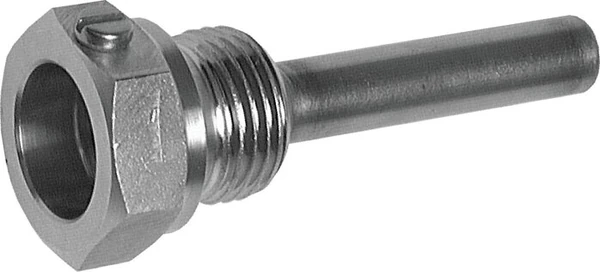

Thermowell (ống bảo vệ cảm biến nhiệt / Schutzrohr) là ống kín một đầu, lắp vào process để bảo vệ cảm biến nhiệt (bimetal, Pt100) khỏi áp suất, ăn mòn và cho phép thay cảm biến mà không xả môi chất. Đây là chi tiết gần như bắt buộc trên đường process áp lực. Fast Group Engineering là đại lý cung cấp hàng chính hãng WIKA (Germany) tại Việt Nam.

Gợi ý chọn nhanh
- Cần đọc nhiệt độ tại chỗ hoặc đưa tín hiệu nhiệt về hệ thống.
- Cần chọn bimetal, RTD Pt100, transmitter hoặc thermowell.
- Cần thay thế theo chiều dài thân nhúng và kiểu chân.
- Dải nhiệt, chiều dài stem và đường kính thân.
- Kiểu chân, ren, vật liệu và môi chất.
- 2/3/4-wire, output 4-20 mA hoặc yêu cầu thermowell.
- Danh mục đồng hồ nhiệt độ WIKA.
- Bài bimetal thermometer.
- Bài RTD Pt100 và thermowell.
Tóm tắt nhanh
- Thermowell cách ly cảm biến khỏi môi chất áp lực/ăn mòn/chảy nhanh.
- Cho phép thay/kiểm định cảm biến mà không dừng hệ thống, không rò môi chất.
- Chọn theo áp suất, nhiệt độ, lưu tốc, vật liệu, chiều dài, kiểu kết nối.
- Cần xét cộng hưởng dòng (wake frequency) với lưu tốc cao.

Vì sao thermowell gần như bắt buộc?
| Không có thermowell | Có thermowell |
|---|---|
| Thay cảm biến phải xả áp/môi chất | Thay cảm biến không cần xả |
| Cảm biến tiếp xúc trực tiếp ăn mòn | Thermowell chịu ăn mòn thay cảm biến |
| Rủi ro rò rỉ khi tháo | Kín process khi tháo cảm biến |
| Cảm biến chịu lực dòng chảy | Thermowell chịu lực, bảo vệ cảm biến |
Các kiểu thermowell
- Threaded (ren): lắp ren vào process, phổ biến, kinh tế.
- Flanged (mặt bích): cho áp/nhiệt cao, đường ống lớn.
- Weld-in / Socket weld: hàn trực tiếp, cho áp cao và độ kín cao.
- Barstock (gia công từ phôi đặc): bền, chống ăn mòn tốt cho process khắc nghiệt.
Cách chọn thermowell (Checklist)
- [ ] Áp suất & nhiệt độ làm việc.
- [ ] Lưu tốc môi chất (xét cộng hưởng/wake frequency).
- [ ] Vật liệu: inox 316/316L hoặc hợp kim theo môi chất.
- [ ] Kiểu kết nối: ren / bích / hàn.
- [ ] Chiều dài nhúng (U/insertion) phù hợp que cảm biến.
- [ ] Đường kính lỗ (bore) khớp đường kính que đo.
- [ ] Bù chiều dài cổ (lagging/extension) nếu có bọc bảo ôn.
Chiều dài nhúng (insertion length U) — tính sao cho đúng?
Đây là thông số dễ sai và ảnh hưởng trực tiếp tới độ chính xác. Phần nhạy nhiệt của cảm biến phải nằm gọn trong vùng dòng chảy chính của môi chất; nếu thermowell quá ngắn, đầu cảm biến ở gần thành ống nơi nhiệt độ thấp hơn, dẫn tới đọc sai. Nguyên tắc thực hành: chọn chiều dài nhúng sao cho đầu thermowell vào khoảng 1/3 tới giữa đường kính ống, và phần nhạy nhiệt ngập ít nhất vài lần đường kính thermowell. Với ống nhỏ, có thể cần lắp nghiêng hoặc dùng co chữ T để đủ chiều sâu nhúng.
Chọn bore khớp que cảm biến
Đường kính lỗ trong (bore) của thermowell phải khớp với đường kính que cảm biến — thường 6, 8 hoặc 3 mm tùy loại. Bore quá rộng tạo khe khí làm chậm truyền nhiệt và tăng trễ đo; bore quá chật thì không lắp được hoặc kẹt cảm biến. Để giảm trễ, nhiều lắp đặt dùng lò xo ép cảm biến chạm đáy thermowell hoặc bôi paste dẫn nhiệt (nếu cho phép), giúp truyền nhiệt tốt và phản hồi nhanh hơn.
Vật liệu thermowell theo môi chất
| Vật liệu | Đặc điểm | Phù hợp |
|---|---|---|
| Inox 316/316L | Chống ăn mòn tốt, phổ thông | Đa số ứng dụng công nghiệp |
| Inox 304 | Kinh tế | Môi chất ít ăn mòn |
| Hastelloy/Inconel | Chịu ăn mòn/nhiệt cao | Hóa chất mạnh, nhiệt cao |
| Barstock | Gia công từ phôi đặc, bền | Áp cao, lưu tốc lớn |
Lưu ý cộng hưởng dòng (Wake Frequency)
Dòng chảy qua thermowell tạo xoáy (vortex); nếu tần số xoáy trùng tần số dao động riêng của thermowell có thể gây rung – gãy. Với lưu tốc cao, cần tính toán (tham chiếu ASME PTC 19.3 TW) và chọn thermowell phù hợp (barstock, chiều dài/độ dày đúng).
Kết hợp cảm biến
Process → Thermowell (bảo vệ) → Cảm biến (bimetal / Pt100) → [Transmitter nếu cần 4–20 mA]
- Chiều dài que cảm biến = chiều sâu thermowell + phần đầu củ.
- Dùng paste dẫn nhiệt hoặc lò xo ép đáy để giảm trễ đo (tùy loại).
FAQ
Có bắt buộc dùng thermowell không? Trên process áp lực/ăn mòn/lưu tốc cao thì rất nên; nó bảo vệ và cho phép bảo trì không dừng.
Thermowell làm chậm đáp ứng đo không? Có một chút trễ; giảm bằng lắp khít, dùng paste dẫn nhiệt, chọn bore phù hợp.
Chọn ren hay hàn? Ren cho phổ thông/dễ tháo; hàn/bích cho áp cao và yêu cầu kín cao.
Sai lầm thường gặp
- Chiều dài nhúng quá ngắn: đầu cảm biến gần thành ống, đọc sai lệch thấp.
- Bỏ qua tính wake frequency ở lưu tốc cao: thermowell rung cộng hưởng và gãy — sự cố nguy hiểm.
- Bore không khớp que cảm biến: khe khí lớn làm chậm đo hoặc kẹt cảm biến.
- Sai vật liệu với môi chất ăn mòn: thermowell thủng, mất tác dụng bảo vệ.
- Quên chiều dài cổ khi có bọc bảo ôn: đầu củ nằm trong lớp cách nhiệt, khó đấu nối và đọc.
Vì sao wake frequency lại nguy hiểm đến vậy?
Khi môi chất chảy qua thermowell, nó tạo các xoáy luân phiên hai bên (vortex shedding). Nếu tần số tạo xoáy trùng với tần số dao động riêng của thermowell, hiện tượng cộng hưởng khiến ống rung mạnh dần và có thể gãy ngay tại chân — mảnh gãy rơi vào dòng process gây hư hại thiết bị hạ nguồn, đây là sự cố nghiêm trọng ở turbine, đường hơi tốc độ cao. Vì thế với lưu tốc lớn, phải tính toán theo ASME PTC 19.3 TW và chọn thermowell dạng barstock có độ dày và chiều dài phù hợp, đôi khi phải rút ngắn chiều nhúng hoặc dùng loại tiết diện đặc biệt (velocity collar) để dịch tần số riêng ra khỏi vùng cộng hưởng.
Ví dụ chọn nhanh
Đo nhiệt hơi trên đường ống áp lực, lưu tốc trung bình: chọn thermowell ren inox 316, chiều nhúng đủ vào giữa ống, bore khớp Pt100 6 mm, kèm cảm biến Pt100 + transmitter. Đường hơi tốc độ cao: chuyển sang barstock, tính wake frequency, cân nhắc kết nối hàn/bích cho độ kín. Môi chất hóa chất mạnh: nâng vật liệu lên Hastelloy. Cùng cách tiếp cận, chỉ thay vật liệu, kiểu kết nối và kích thước theo áp/nhiệt/lưu tốc thực tế.
Schutzrohr là gì?
Là tên tiếng Đức của thermowell — "ống bảo vệ" cảm biến nhiệt độ. Trên tài liệu WIKA gốc thường ghi Schutzrohr, tương đương thermowell trong tiếng Anh.
Có cần tháo cả thermowell khi thay cảm biến không?
Không. Thermowell vẫn lắp cố định trên process, bạn chỉ rút cảm biến ra khỏi thermowell để thay — không xả môi chất, không dừng hệ thống.
Cần tư vấn hoặc báo giá thermowell WIKA?
Gửi áp/nhiệt/lưu tốc, vật liệu, kết nối, chiều dài để nhận báo giá trong 24h.
- Email: minhduc@fastgroup.vn · Zalo: (+84) 938 888 958
Fast Group Engineering – đại lý cung cấp hàng chính hãng WIKA (Germany) tại Việt Nam.
Bài liên quan: [Đồng hồ nhiệt độ bimetal WIKA] · [RTD Pt100 WIKA] · [Chọn chân đứng/ngang] · [Chọn thiết bị đo cho O&G]